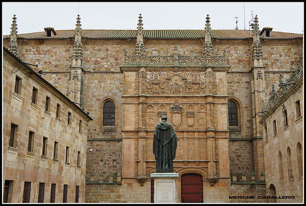

Apunte histórico
Las huellas del tiempo
La presencia humana en los límites de la actual provincia de Salamanca se adentra en el
tiempo; así lo corroboran los grabados paleolíticos de la estación rupestre de Siega Verde
(de entre 10.000 y 20.000 años), o las pinturas prehistóricas esquemáticas del Valle de Las
Batuecas.
Durante la Edad del Hierro diversas tribus se asentaron en el noroeste y levantaron poblados
fortificados, los castros, entre los que destacan Las Merchanas, Yecla de Yeltes o Saldeana.
Es el Territorio Vetón.
La civilización romana dominó a los vetones y dio buenas muestras de su talento en la Vía de
la Plata. La presencia musulmana vació estas tierras, si bien la convivencia propició el
nacimiento de la cultura mudéjar, especialmente representativa en la comarca de Peñaranda.
En el siglo XII, la repoblación de leoneses, castellanos, francos… dejó sus huellas en
topónimos como la Sierra de Francia o Ciudad Rodrigo. El territorio se distribuyó entorno
a las villas de señorío y las ciudades de realengo, con un carácter militar que se puede
observar en las murallas y castillos de Ledesma, Montemayor del Río, Béjar o Miranda del
Castañar. Y también nacieron nuevos reinos, como Portugal, y nuevas disputas, origen de
las Fortificaciones de Frontera.
Con la Edad Moderna se levantaron casas señoriales, iglesias monumentales o fundaciones
religiosas en los principales núcleos urbanos, como Ciudad Rodrigo, Ledesma o Alba de
Tormes. A su vez, son tiempos de confrontaciones europeas; Salamanca ocupó un papel
protagonista en la Guerra de la Independencia, como queda patente en el sitio histórico
de la batalla de Los Arapiles.